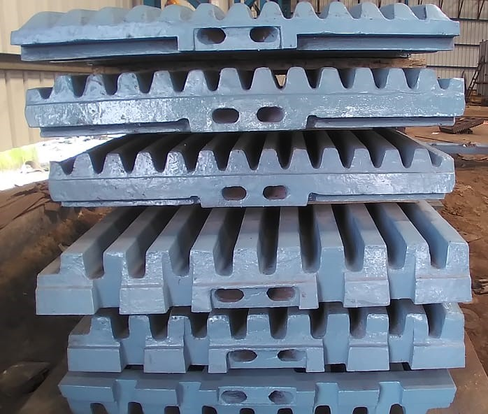

We supply high quality Jaw Crusher parts for many different models of crushers. These include Jaw plates, cheek plates, Toggle plates, etc. in 18%Mn and 22%Mn with Cr content between 2% – 3%. These have been tested and proven to extend wear life against many others currently on the market. .